Aspiring Aerospace Engineer & Researcher • Senior at Round Rock High School • Class of 2027
My long-term vision is to help engineer the spacecraft, propulsion, and autonomous systems that make human habitats on Mars and beyond possible, turning the strict mass, power, and resupply limits of deep space into cleaner, more resilient technologies on Earth.
Developed & deployed an open-source ML web platform trained on 1,000+ CFD runs (R² = 0.984) to predict airflow separation, reaching 150+ users through workshops and tutorials.
Independent research projects advancing aerodynamic efficiency and propulsion systems
Biomimetic Aerodynamic Research
Conducted research for aircraft fuel efficiency improvement, paper posted in JEI pre-print, Peer-Review completed and under Revision for JEI Journal, named Top 12/330 at Sci Fair, securing awards and $6K scholarship
Jump to Study↓
Ion vs. Chemical Propulsion Study
Conducted a comparative study evaluating electric ion thrusters (NEXT-C) against chemical rocket engines (RS-25), analyzing specific impulse, thrust-to-weight ratios, propellant mass constraints, and multi-year deep-space acceleration profiles.
Jump to Study↓
Independent Research
Analyzing the efficiency of aircraft using biomimetic wings
With air travel emitting one billion tons of CO2 annually and transportation contributing ~28% of global emissions, developing efficient wing designs to reduce drag is critical for mitigating global warming. This two-phase study evaluated biomimetic wings inspired by eagles and humpback whales. In Phase 1, Computational Fluid Dynamics (CFD) and wind-tunnel testing on 10-inch half-wing models revealed that the whale-mimetic design improved the lift-to-drag ratio by up to 47% at a 5-degree angle of attack and 50 m/s airspeed; the eagle-inspired design showed inconsistent performance. Phase 2 scaled the whale-mimetic design to a 40.5-inch full-wing model. CFD simulations at 10 m/s and a 5-degree angle of attack showed a 12.2% improvement in the lift-to-drag ratio. Subsequent flight testing of a drone prototype demonstrated a 12% increase in flight distance per volt compared to conventional wings. These results suggest that whale-mimetic wings significantly enhance fuel efficiency and represent a promising advancement in reducing the environmental impact of aviation.
Computational Fluid Dynamics (CFD)
15,000 Computational Fluid Dynamics (CFD) simulation trials executed at airspeeds of 50 m/s, 100 m/s, and 240 m/s at angles of attack of 0, 5, and 10 degrees.
Custom-built Wind-tunnel Testing
A wind-tunnel was built and utilized for testing the best-performant whale-mimetic vs conventional aerofoil. Lift produced by the whale-mimetic aerofoil was compared against the lift produced by conventional cambered aerofoils.
Flight Testing & Telemetry Data
A commercial drone-sized prototype aircraft with a 40.5-inch wingspan was flown using the 3D printed conventional and whale-mimetic wings. This involved:
Aircraft Fabrication and Assembly
Circuit Development
GPS Module Integration
Data Logger Programming
Flight testing
First Author (JEI DOI ↗)
1st Place Greater Austin Regional Sci & Eng Fair
$2500 SpaceX Scholarship (TXSEF)
US Air Force Research Lab Award
$3000 Smith & Dawson Excellence Award
The Problem
Aviation generates 1B tons of carbon annually. With demand projecting a 110% rise by 2050, innovative fuel efficiency solutions are critical to combat global warming.
The Hypothesis
Implementing humpback whale flipper tubercles or slotted eagle primary feathers into aerofoil designs minimizes drag, thereby increasing lift-to-drag (L/D) ratios and fuel efficiency.
Research Background & Study ObjectivesBiological mechanisms of whale tubercles & eagle wingtip slots
Toggle Details
Research Background
Adapting aerodynamic features from nature, such as bird and whale anatomy, to enhance airplane wing design
Humpback whale flipper tubercles reduce drag and improve the lift-to-drag ratio
Eagle wingtip feathers minimize drag by breaking large vortices into smaller, less impactful ones
Objectives
1
Identify the optimal biomimetic wing design for improved aerodynamic efficiency
2
Prototyping and Flight-Testing Biomimetic Wings: Empirical Performance Evaluation
Methodology - Phase 1
3D Modeling & Computational Fluid Dynamics (CFD): Designed 10-inch half-wing models representing conventional Clark-Y, whale-mimetic, and eagle-mimetic configurations. Conducted over 200 CFD simulations across 15,000 trials, analyzing performance at varying airspeeds (50, 100, 240 m/s) and Angles of Attack (0°, 5°, 10°).
Wind Tunnel Construction & Empirical Testing: To validate computational models with physical data, a custom 2'x1.5'x1.5' wind tunnel was fabricated. The setup utilizes 280 six-inch PVC pipes arranged in a honeycomb formation to ensure laminar airflow at a controlled speed of 4 m/s.
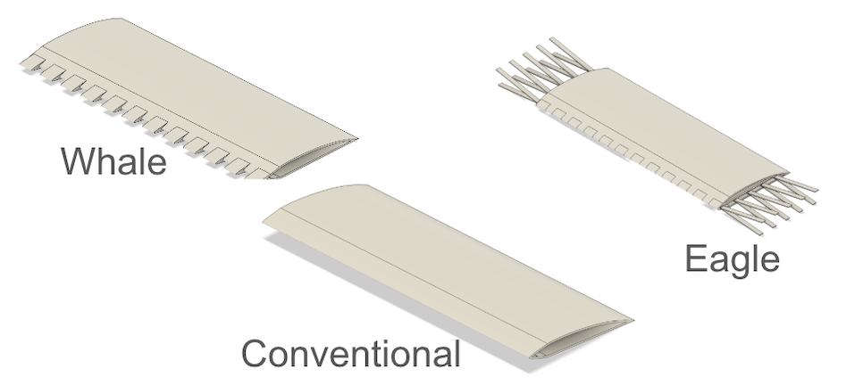
Fig 1.1: 3D CAD models of 10-inch conventional Clark-Y, humpback whale tubercle, and slotted eagle half-wings.
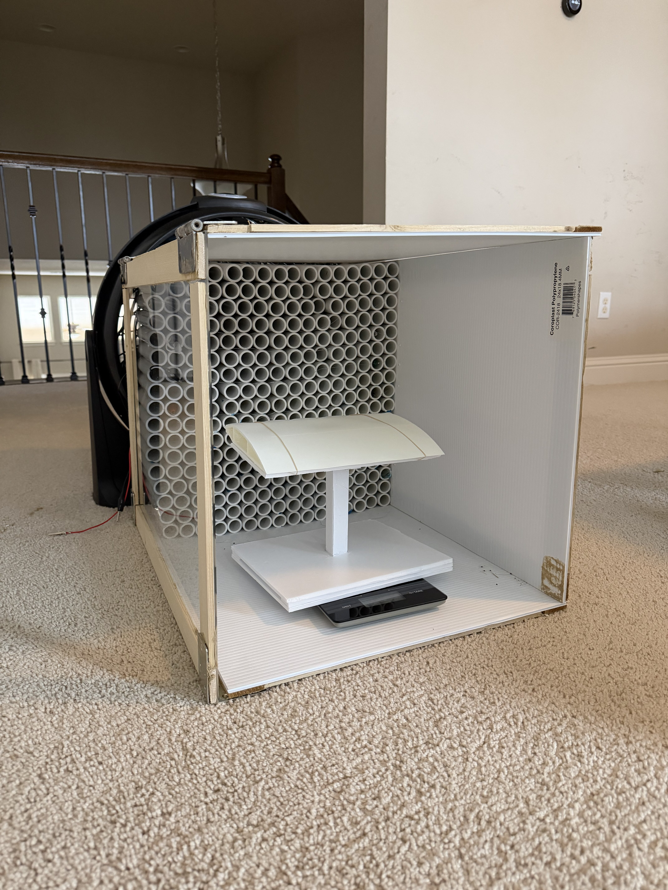
Fig 1.2: Custom 2'×1.5'×1.5' wind tunnel with a 280-pipe honeycomb flow straightener for laminar 4 m/s testing.
Methodology - Phase 2
UAV Fabrication & 3D Prototyping: Transitioned from computational testing to physical validation by scaling the most efficient models to a 40.5-inch full wingspan. Fabricated custom aircraft platforms incorporating the whale-mimetic tubercles directly into the leading edge of the aerofoils for real-world environmental testing.
Flight Testing & Telemetry Tracking: Conducted rigorous field tests at operational speeds of ~10 m/s. Programmed and integrated a custom onboard data logger to precisely capture flight telemetry and power consumption. The physical flight data corroborated the CFD simulations, demonstrating a +12% increase in overall flight range (1802 meters/volt versus the 1596 meters/volt baseline).
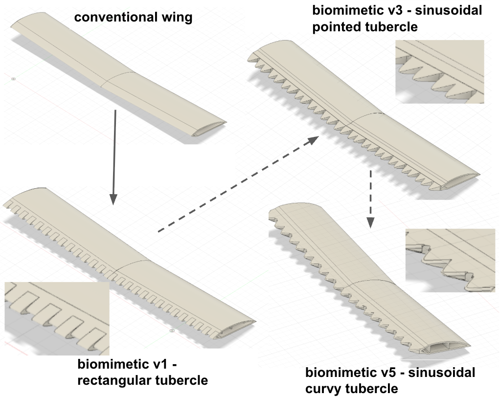
Fig 2.1: Scaled 40.5-inch full-span 3D wing models comparing conventional and whale-mimetic tubercle leading edges.
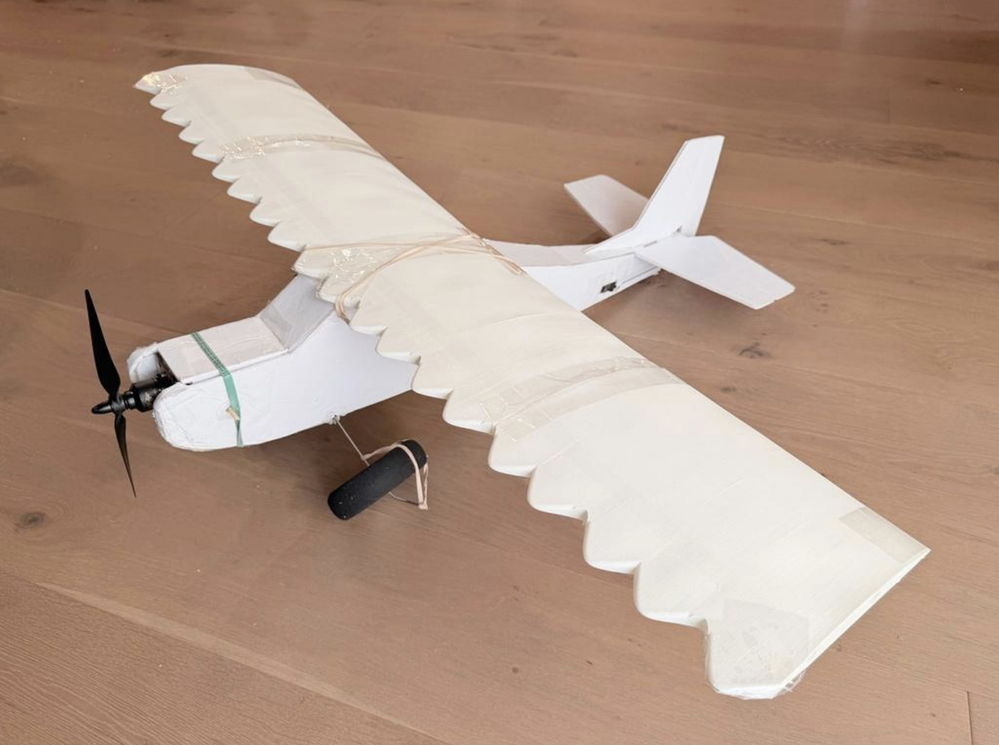
Fig 2.2: Custom-fabricated 40.5-inch UAV prototype outfitted with 3D-printed whale-mimetic wings for field testing.
Result: 10-Inch Half Wing Simulation
Aerodynamic Efficiency Gains: The computational fluid dynamics (CFD) analysis revealed substantial performance improvements for the biomimetic designs. At a baseline testing speed of 50 m/s and an Angle of Attack (AoA) of 5°, the whale-mimetic tubercle wing demonstrated a peak +47% increase in the Lift-to-Drag (L/D) ratio compared to the conventional Clark-Y aerofoil.
Delayed Flow Separation: Visual airflow trajectory models confirmed the mechanism behind this efficiency. The leading-edge tubercles acted as passive flow control devices, channeling the air into accelerated streams (vortices) over the wing surface. This energized the boundary layer, successfully mitigating turbulence and significantly delaying flow separation and aerodynamic stall at higher angles of attack.
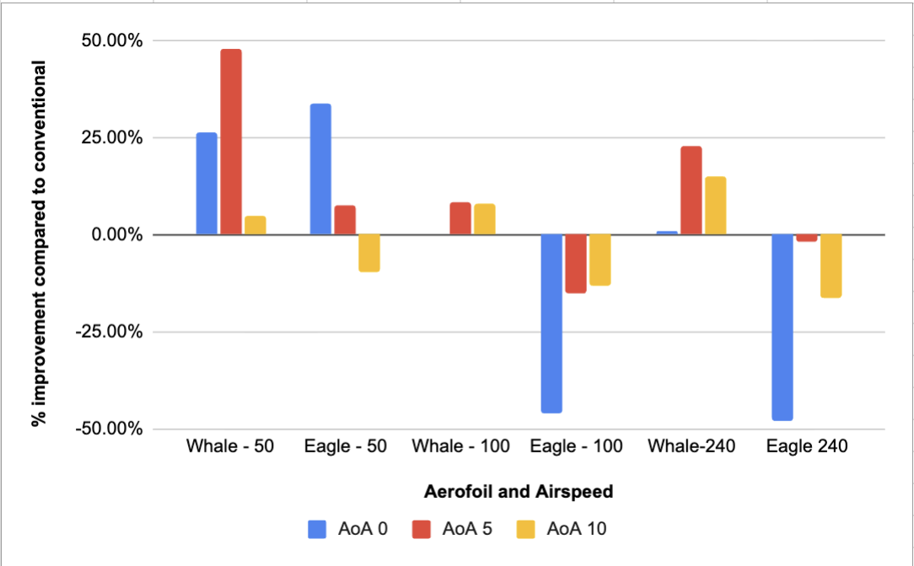
Fig 3.1: Lift-to-drag ratio comparison across airspeeds and angles of attack (+47% peak gain at 50 m/s, 5° AoA).
Full-Scale Aerodynamic Validation: Following the successful half-wing trials, the fully scaled 40.5-inch UAV wingspan was subjected to comprehensive CFD analysis. The simulation data confirmed that the biomimetic tubercles successfully scale to larger geometries, maintaining significant aerodynamic superiority over the baseline models under real-world operational flight conditions.
Statistical Performance Consistency: To ensure reliability, variance in the aerodynamic data was rigorously tracked across multiple trials. The resulting statistical boxplot illustrates a tightly clustered performance metric for the biomimetic design. This indicates not just an improvement in the peak lift-to-drag ratio, but a highly stable and consistent aerodynamic profile essential for reliable UAV field flights.
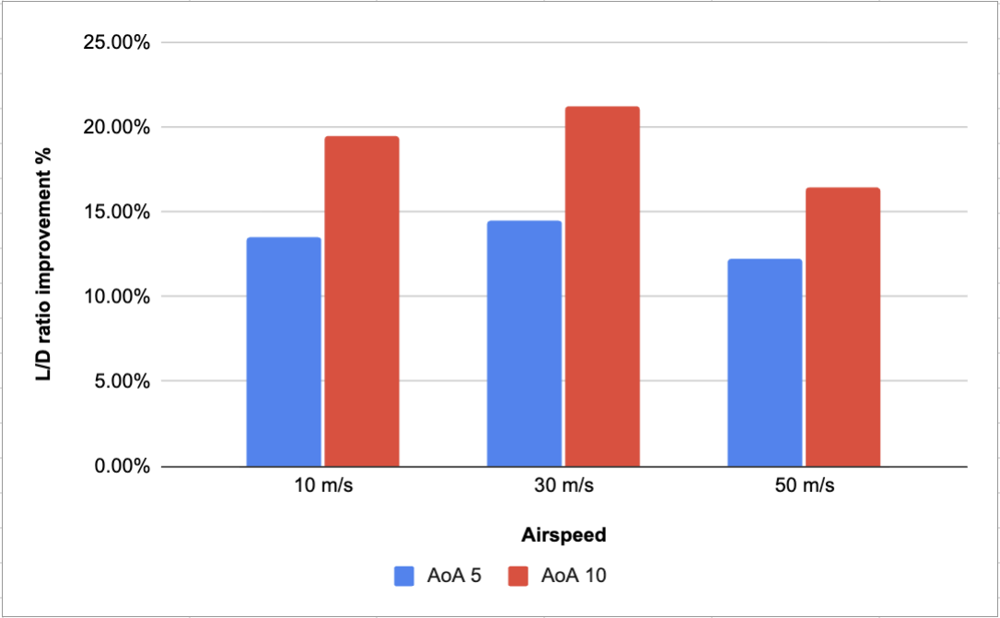
Fig 4.1: Full-scale 40.5-inch wing CFD simulation confirming +12.2% L/D ratio improvement at 10 m/s, 5° AoA.
Custom Telemetry Integration: To capture precise empirical data during physical flight tests, a custom data acquisition circuit was engineered and integrated directly into the UAV payload. This system tracked real-time voltage, current, and GPS distance simultaneously, ensuring that performance metrics collected during the ~10 m/s field tests were accurate, bias-free, and perfectly synchronized.
Empirical Range Extension: The physical field tests successfully validated the computational projections. The UAV equipped with the whale-mimetic leading-edge tubercles achieved a verified flight efficiency of 1802 meters per volt, compared to the 1596 meters per volt baseline of the conventional wing. This translates to a definitive +12% real-world flight range extension, underscoring the practical viability of biomimetic structures for commercial aviation.
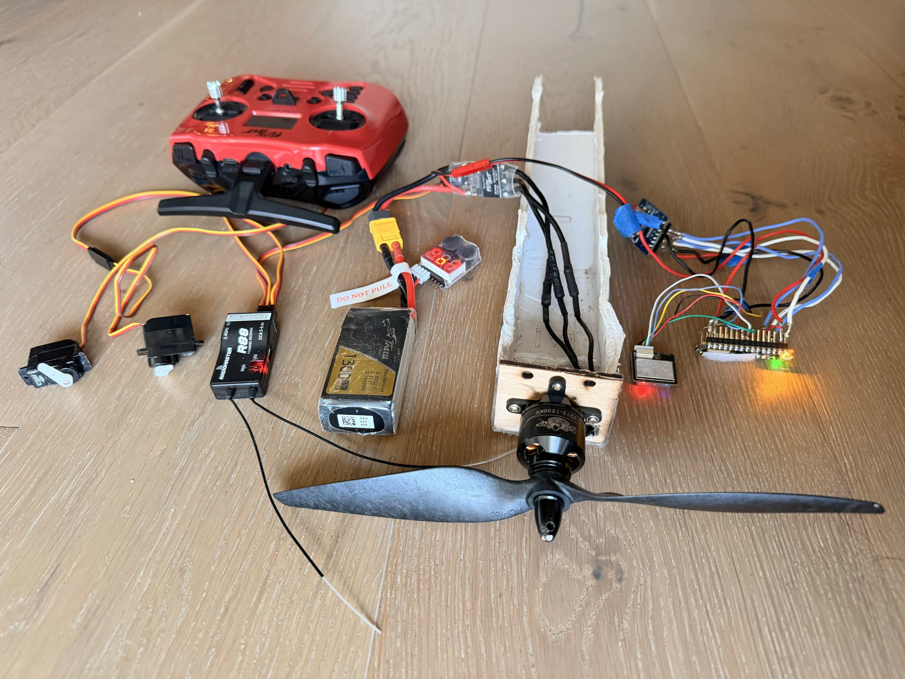
Fig 5.1: Custom onboard data-acquisition circuit logging synchronized GPS distance, voltage, and current.Fig 5.2: Physical field flight test of the 40.5-inch whale-mimetic UAV prototype (~10 m/s cruise airspeed).
Result Summary
Configuration
Scale
Condition
Metric Gain
CFD Simulation
10-inch Half Wing
50 m/s @ 5° AoA
+47% L/D Ratio
CFD Simulation
40.5-inch Full Wing
10 m/s @ 5° AoA
+12.2% L/D Ratio
Flight Testing
40.5-inch Wingspan
10 m/s Avg airspeed
+12% Meter/Volt
The whale-mimetic wing performed better in all the 3 test scenarios.
At the same wing size and similar airspeed, the CFD simulation results and the flight test results were comparable.
Findings
The whale-mimetic wing had higher lift-to-drag ratio compared to the control and eagle-mimetic wing
Lift-to-drag ratio gain was most significant at lower airspeeds
Lift-to-drag gain decreased with larger wing size
Fuel efficiency gain observed in flight testing is proportional to the CFD lift-to-drag ratio gain
Applications
Improvements in fuel efficiency of commercial drone could result in:
Extended drone range, mitigating current limitation for drone adoption
Reduced energy consumption and CO₂ emissions
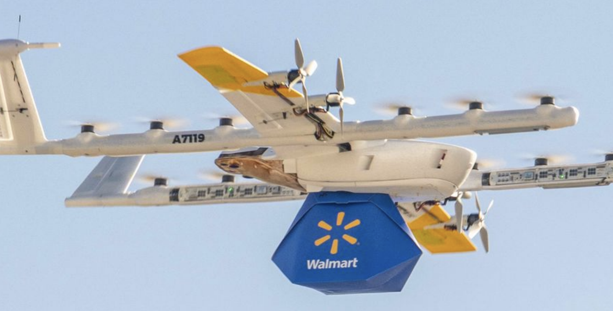
Fig 6.1: Commercial UAV range extension application.Credit: wing.com
Increased adoption of UAVs through:
Fewer base depots and expanded rural service area coverage
Greater coverage for agricultural inspections
Better loiter times and reduced fleet sizes for defense operations
Fig 6.2: Expanded rural coverage radius and reduced base-depot requirements.
Wind tunnel airspeeds were limited to ~4 m/s, preventing the replication of high-speed flight conditions.
Physical drag could not be measured in the wind tunnel due to instrumentation constraints; only lift was recorded.
Manual pilot control and slight environmental winds introduced natural variability during flight testing.
Statistical analysis could not be conducted on flight test data due to a limited sample size of 20 flights exceeding 100 meters.
Mitigations
Environmental and pilot variables were significantly mitigated by flying models back-to-back on the same days using the same battery pack.
Flights less than 100 meters were removed to cleanse the data.
Conclusion
Whale-mimetic wings significantly improve lift-to-drag ratios and overall fuel efficiency over conventional designs.
Integrating these biomimetic structures into commercial UAVs tangibly extends their operational flight range.
Increased range capabilities accelerate commercial UAV adoption, replacing high-emission delivery vehicles and reducing net greenhouse gas output.
This approach represents a highly actionable step toward mitigating the broader environmental impact of the aviation and transportation sectors.
What's Next?
Real primary feathers bend and spread at slow, steep angles. My rigid, 3D-designed Eagle primary feathers can’t. I want to test flexible feathers in a University lab.
Top Literature References (6)NASA Glenn, Miklosovic et al., Fish & Battle, Tucker, and Stolaroff et al.
Fish, F. E., and J. M. Battle. "Hydrodynamic Design of the Humpback Whale Flipper." Journal of Morphology, vol. 225, no. 1, 1995, pp. 51–60, doi.org/10.1002/jmor.1052250105.
Miklosovic, D. S., et al. "Leading-Edge Tubercles Delay Stall on Humpback Whale (Megaptera novaeangliae) Flippers." Physics of Fluids, vol. 16, no. 5, 2004, pp. L39–L42, doi.org/10.1063/1.1688341.
Stolaroff, J. K., et al. "Energy Use and Life Cycle Greenhouse Gas Emissions of Drones for Commercial Package Delivery." Nature Communications, vol. 9, no. 1, 2018, article no. 409, doi.org/10.1038/s41467-017-02411-5.
Propulsion Systems Study
Ion vs. Chemical Propulsion Study: The Future of Deep-Space Travel
Freshman Year Study
Project Snapshot
For space agencies and commercial providers to frequently launch and operate interplanetary missions, spacecraft require propulsion architectures that maximize efficiency while minimizing launch mass. In my freshman year, I conducted a comparative study evaluating electric ion propulsion engines against conventional chemical rocket engines across six core engineering variables: thrust output, specific impulse (Isp) efficiency, propellant consumption, manufacturing and operational cost, system and fuel weight, and time to accelerate to high velocities.
Research Question
Are electric ion propulsion engines the future of deep-space travel compared to traditional high-thrust chemical rocket engines?
Hypothesis
Future deep-space spacecraft will be dominated by electric ion propulsion engines due to their exceptionally high specific impulse efficiency, continuous long-duration acceleration, and low propellant mass consumption.
Research Methodology & Procedure
1
Data Collection
Gathered primary technical specifications—including thrust, specific impulse, propellant mass, operating power, and acceleration timelines—from NASA, ESA, and propulsion manufacturers.
2
Comparative Benchmarking
Contrasted electric ion engines (NEXT-C) against liquid chemical engines (RS-25) across the six core engineering variables to evaluate fuel economy versus instantaneous thrust.
3
Trajectory & Mission Synthesis
Analyzed multi-year velocity accumulation data from operational deep-space missions (NASA’s Dawn spacecraft) to determine optimal mission regimes for each propulsion architecture.
Engine Benchmark Comparison: Electric Ion vs. Chemical
To quantify the performance trade-offs between the two propulsion methodologies, I benchmarked NASA’s NEXT-C (NASA Evolutionary Xenon Thruster – Commercial) gridded ion system against the Block 2 Aerojet Rocketdyne RS-25 liquid-propellant chemical engine utilized on the Space Launch System (SLS):
Engine Architecture
Propulsion Type
Specific Impulse (Isp)
Maximum Thrust
Primary Mission Regime
NEXT-C
Electric Gridded Ion (Xenon)
4,190 seconds
237 mN (at 6.9 kW power)
In-orbit deep-space cruise & high delta-v interplanetary transit
Block 2 Aerojet Rocketdyne RS-25
Chemical Liquid (LH2/LOX)
452.3 seconds (Vacuum)
512,300 lbs (2.279 MN)
Planetary surface launch, gravity escape & rapid orbital maneuvers
Key Findings & Velocity Analysis
Data Observations & Propellant Trade-Offs
9.2x Specific Impulse Advantage: The NEXT-C ion engine achieves a specific impulse of 4,190 seconds—over nine times more fuel-efficient than the RS-25 chemical rocket engine (452.3 seconds in vacuum), dramatically reducing required propellant mass.
Equal Acceleration Fuel Efficiency: Electric ion propulsion requires a fraction of the propellant mass to achieve the same cumulative velocity change as chemical rockets, making long-duration interplanetary transit feasible without massive fuel tanks.
Continuous Multi-Year Acceleration (Dawn Spacecraft): While chemical engines deliver massive thrust (2.279 MN) in short bursts that quickly exhaust fuel, ion thrusters apply micro-thrust (237 mN) continuously over years—increasing NASA’s Dawn Spacecraft velocity by 25,000 mph over 5.9 years.
Launch & Xenon Constraints: Because ion engines produce millinewton-scale thrust, it is impossible to use them to launch a rocket off Earth into orbit. Additionally, they depend on easily ionizable gases like Xenon, which are rare and expensive to produce.
Change in Velocity of an Ion Engine Over Time
NASA Dawn Benchmark
Graph Insight: Modeled on NASA’s Dawn Spacecraft, this curve illustrates how continuous micro-thrust compounds velocity over a ~6-year mission as propellant mass decreases—reaching +25,000 mph over 5.9 years without exhausting fuel reserves.
Conclusion
The comparative data supports the hypothesis that electric ion propulsion engines represent the optimal architecture for deep-space transit once a spacecraft reaches orbit, offering unmatched propellant efficiency, lightweight fuel loads, and high cumulative delta-v over long distances. Chemical engines remain indispensable for escaping planetary gravity and executing rapid, high-thrust maneuvers—highlighting how future interplanetary missions to Mars and beyond will rely on a hybrid architecture combining chemical launch stages with high-power electric propulsion.
What's Next?
As a ninth-grader, I barely scratched the surface with this comparative study of chemical and electric propulsion. In college, I want to study propulsion systems in depth and conduct hands-on experiments in a university lab—testing electric thrusters and plasma propulsion hardware at a scale my high school workbench could never allow.
Primary Sources & References
NASA: Gridded Ion Thrusters & NEXT-C Commercial Propulsion Overview.
German Aerospace Center (DLR): NASA Dawn Spacecraft Mission Trajectory & Ion Acceleration Data.
European Space Agency (ESA): SMART-1 Solar Electric Propulsion Lunar Mission Documentation.
Projects enriching my passion for aerospace and engineering
Independent Capstone Project
Developed a browser-based open-source predictive aerodynamics software toolkit for screening aircraft wing efficiency, replacing costly hardware and simulation software; hosted workshops and published YouTube video; refined via 60+ user feedbacks
Co-led technical engineering and mechatronics design across multiple international STEAM challenges, building electromagnetic cranes, pneumatic structures, and precision launchers
01 • The TriggerCost & Compute Barriers in Student Aerodynamics
During my research, I noticed a critical gap: commercial 3D design and Computational Fluid Dynamics (CFD) simulation software priced at around $7,649/year—alongside specialized hardware and hours-long run times—locks many aspiring student engineers out of aerospace research.
02 • The SolutionInstant Browser-Based ML Surrogate Screening
I designed and deployed WingCheck Aero Toolkit, a lightweight Python/Streamlit platform powered by a surrogate ML model that predicts separation_x_over_c (normalized chord flow-separation point). Students tune airfoil family (symmetric, cambered, or whale-mimetic), AoA, airspeed, and tubercle geometry in real time.
03 • Technical WorkExtra Trees ML & Plain-English UI
Curated a 1,000+ simulation dataset from my 250+ CFD runs, benchmarked regression families in scikit-learn (Random Forest, Extra Trees, Ridge, Gradient Boosting), selected Extra Trees (R² = 0.984), and rebuilt the UI with 40+ plain-English definitions informed by 60+ user surveys.
Because a surrogate model is only trustworthy within its training distribution—and delayed separation (separation_x_over_c) does not automatically guarantee higher lift or lower drag—I engineered a dedicated Model Reliability panel framing WingCheck as a first-pass screening tool rather than a replacement for CFD or wind-tunnel testing.
05 • Why This Matters150+ Users Reached
Making a tool free does not automatically make it accessible. Through hands-on workshops and video tutorials, over 150 users have used WingCheck to test ideas and reason about how aerodynamic efficiency extends battery-powered flight range without paying around $7,649/year for commercial software.
Video Walkthrough & Live App Demonstration
In this walkthrough video (Biomimicry in Flight: Using Machine Learning to Optimize Better Aircraft Wings), I demonstrate how students and early-stage engineering teams can use WingCheck in the browser to compare symmetric, cambered, and humpback whale-inspired tubercle wings, interpret real-time separation_x_over_c predictions (R² = 0.984 on held-out test data), and explore how aerodynamic efficiency connects to battery life and carbon emissions.
Community & Educational Impact: Video & Web App Feedback Evaluation
To make the tool useful beyond my own research, I paired the software with a workshop slide deck, student worksheet, instructional video, and feedback survey—reaching 150+ users across hands-on workshops and online tutorials. A comprehensive evaluation survey was conducted among students and users who viewed the YouTube walkthrough video and tested the WingCheck Aero Toolkit hands-on. The feedback confirmed substantial learning gains across aerodynamics and machine learning concepts, exceptional web app usability (4.72/5 ease of use), and strong peer advocacy—while providing actionable feature requests that directly guide the platform's roadmap.
Total Respondents
61
Responses recorded
Avg Video Clarity
4.53/5
Clear scientific explanation
Student Recommendation
90.6%
Would recommend to peers
Learning Utility Rate
92.5%
Tool helps students learn
Knowledge Growth: Pre-Video Baseline vs. Post-Video Understanding
Mean self-reported comprehension score on a 1.00 to 5.00 scale across core aerodynamic and ML topics
+77% Avg Comprehension Gain
Pre-Video Baseline Post-Video Understanding
Graph Insight: Prior to watching the walkthrough and using WingCheck, only 13.2% of participants reported familiarity with aerodynamics (mean 2.45/5) and 39.6% with machine learning (mean 3.00/5). Following the interactive module, comprehension surged across all four core concepts—reaching 4.36/5 on flow separation, 4.51/5 on whale tubercle wing design, 4.26/5 on the separation_x_over_c metric, and 4.66/5 on how machine learning accelerates simulation screening.
App Usability & Video Engagement
% Positive Ratings (≥4/5)
Graph Insight: Over 96.2% of users rated the web app easy to use (mean 4.72/5) and 92.5% confirmed that the prediction outputs were clear and interpretable (mean 4.53/5), validating the plain-English UI redesign.
Perceived Tool Utility for Student Learning
Student Sentiment Share
Graph Insight: An overwhelming 92.5% of respondents affirmed that WingCheck directly helps students learn aerodynamic design concepts, while 81.1% reported that the walkthrough and web app sparked new interest in STEM and aerospace.
Aerodynamics understanding increased from a 2.40–2.45 baseline to 4.31+ (up to 4.66/5) across complex topics including boundary-layer flow separation, humpback whale tubercle wings, and ML-assisted simulation screening.
2
Exceptional Usability & Reception
Over 96% (96.2%) rated web app usability positively (4.72/5 ease of use), and 92.5% affirmed the tool directly helps students master aerodynamics without requiring expensive CFD software.
3
Strong Peer Advocacy
90.6% of surveyed students recommend the video and toolkit to fellow peers interested in engineering, physics, drones, and AI, with 81.1% reporting newly sparked interest in STEM.
4
High-Priority Next Steps
Introduce dynamic 2D/3D visual airflow animations, interactive hover tooltips and glossary cards for advanced terminology (e.g., separation_x_over_c), and expanded variable camber/NACA geometry controls.
5
Curricular & Outreach Opportunity
Multiple respondents noted high potential for classroom integration, guided onboarding walkthroughs, and real-world science fair and STEM club demonstrations.
Methodological Note & Limitations: Percentages reflect the n = 53 core structured survey cohort (out of 61 total feedback responses recorded across hands-on workshops and online forms). Survey findings are based on self-reported student ratings and open-ended feedback following the learning module; while reported comprehension gains and usability sentiment are strongly positive, these outcomes represent perceived learning rather than objective standardized testing assessments.
Latest Update & Upcoming Work
Recent Release
Gamified Wing Lab Mode
Based on feedback, recently gamified WingCheck with interactive challenges to introduce younger students to core aerodynamics principles—turning concepts like Angle of attack, airspeed, and flow separation into an engaging, hands-on learning experience.
Up Next
Advanced Mode with Custom Wing Sizing
Developing an Advanced Mode that enables users to specify custom wing dimensions rather than relying solely on preset sizes, giving students greater flexibility to evaluate their own bespoke airframe geometries.
Destination Imagination
Combining Engineering, Art, and Teamwork on a Global Stage
The Ascent of the Thought-Tree
A huge sigh of relief washed over me as our colorful "thought-tree" finally rose into the air. As it reached the peak of its ascent, the circular leaves—embedded with custom LED strips—automatically lit up the room in a rainbow of colors. Attached to each leaf was a tag representing a core value of humanity: creativity, honesty, bravery, and kindness. While most teams at the competition built standard jigsaw puzzles, my team decided to build a "growing puzzle tree". We wanted the different branches to represent life abstracts, turning our project into a "tree of humanity".
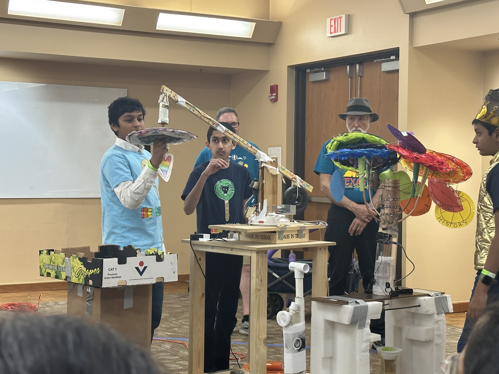
3D Thought-Tree ascending with LED leaves
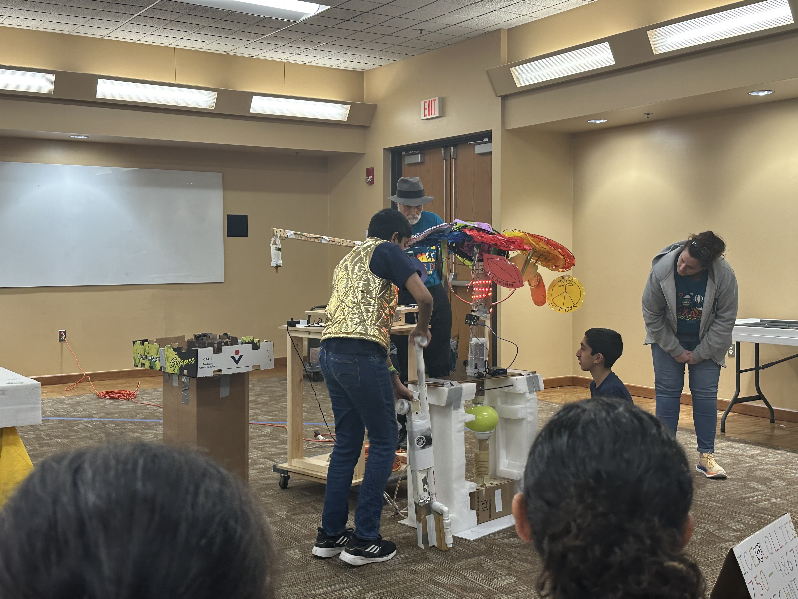
Interlocking branches & human-value tags
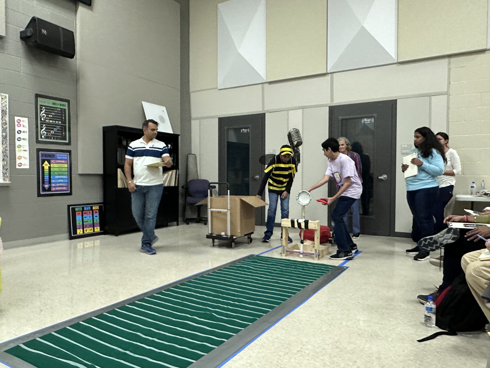
Precision beanbag launcher (280–300 cm)
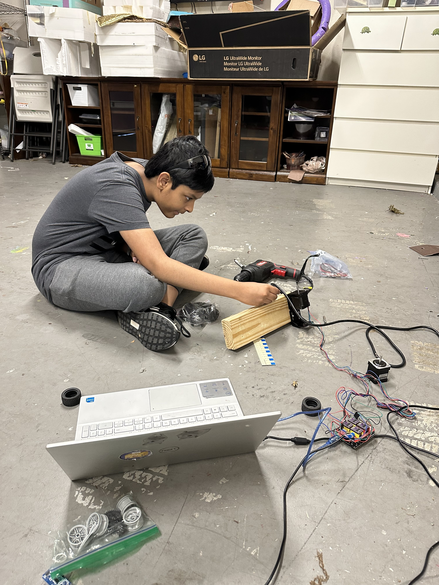
Arduino crane & electromagnet circuitry
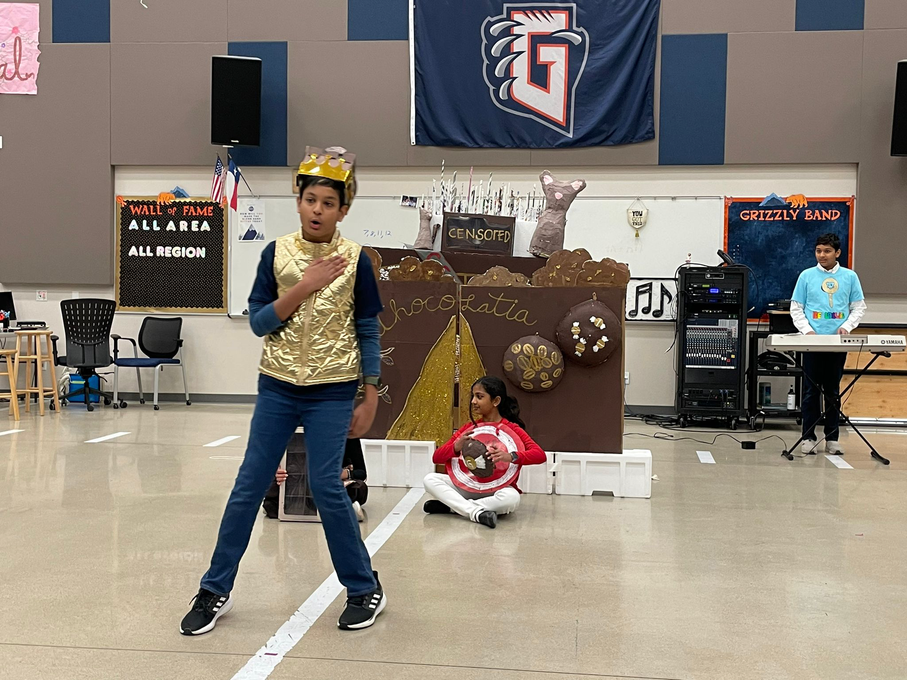
Middle School Global Finals presentation
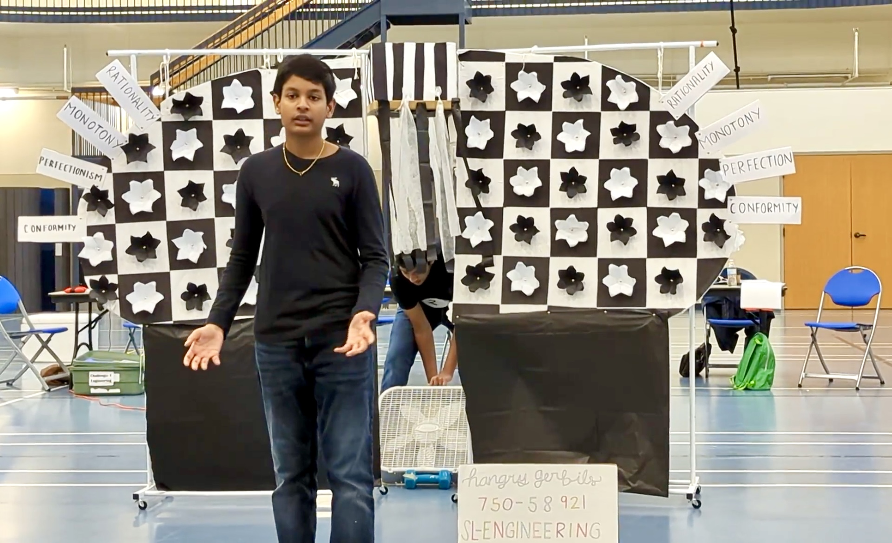
High School Global Finals live skit
Engineering Behind the Art
This was all part of Destination Imagination (DI), a STEAM competition where teams are given a massive challenge and have to use a mix of STEM, fine arts, and teamwork to build a solution and present it through a live skit. That year, our task was to build a puzzle solver robot that could solve a chosen puzzle using technical methods. I co-led the design and development of the technical side, working alongside friends who were just as obsessed with engineering and science as I was.
Bringing our story to life meant dividing up the work based on what we were good at, from writing the script to building the actual props. One of my friends was amazing at electrical engineering and circuitry, while another was a woodworking expert. Even though I was a key player in the overall technical build, I had my own learning curves. I seriously struggled with precisely cutting wood blocks and attaching them together with L-brackets. My teammate was patient enough to teach me, and in return, I taught them how to use the Arduino IDE to program our crane's controls.
To make the mechanism work, we built an electromagnetic crane that used programmed motors, switches, and buttons to move and operate. It used a custom electromagnet to pick up and release the puzzle pieces. A pneumatic pump and piston using hydraulics were also devised to push up the puzzle structure around 6 inches to represent the humanity-tree growth.
Precision Beanbag Launcher
For another year's competition, the requirement was to build a beanbag launcher that could hit an exact distance with repeatable precision. We pooled our engineering skills and worked as a tight unit to design and calibrate a custom thrower mechanism. Our main goal was consistency, which meant analyzing launch angles and spring tension until the device worked like clockwork. After hours of fine-tuning the math and hardware, we got the launcher to a point where it could reliably and accurately fire a single beanbag right into a target zone between 280 and 300 centimeters away.
A Global Triumph
Watching our masterpiece actually work and amaze the audience and judges made me smile, knowing that months of research, trial-and-error, and pure determination were going to pay off. The teamwork skills I built during that DI season have been invaluable ever since, whether I'm working on a regular group project at school or collaborating with PhD students at the UT Austin aerospace lab.
Our team went on to be incredibly successful, ultimately winning the first-place trophy at the global competition twice—once in the middle school division and again in high school. Along the way, we were honored with both the DaVinci Award and the Renaissance Award, special recognitions reserved for teams that display exceptionally unique solutions, courageous risk-taking, and outstanding creativity.
Standing on top of a global stage that featured over 600 teams from 13 different countries was completely exhilarating. It wasn't just because we successfully combined art and engineering, but because we got to fail, learn, and succeed together as close friends.
2x Global 1st Place
DaVinci Award
Renaissance Award
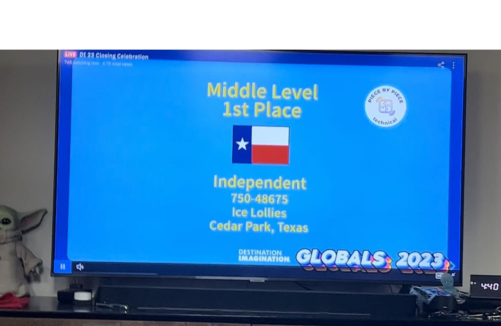
Middle School Global 1st Place trophy
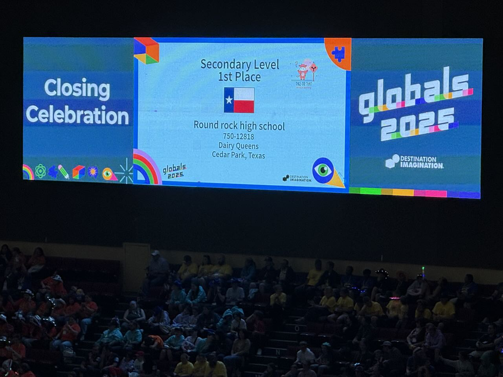
High School Global 1st Place trophy
Lab Research
Collaborative aerospace research at the University of Texas at Austin
Research Assistant
UT Austin research project for the US Dept of Navy
Project Snapshot
Experimental Rigor
670
Controlled sensor trials
Hardware Evaluated
3 Sensors
Optical ToF & Ultrasonic
Selected Sensor Bias
+2.73 mm
Adafruit VL53L0X mean offset
Sponsored Platform
U.S. Navy
Ship-inspection UAV
Collaborating with Professor Dr. Jayant Sirohi and Ph.D. researchers at the University of Texas at Austin’s Cockrell School of Engineering Vertical Flight Laboratory on a U.S. Department of the Navy initiative to develop a specialized autonomous Unmanned Aerial Vehicle (UAV) for ship inspection. Operating safely around complex naval vessels demands extended flight endurance, precise close-quarters navigation, and reliable onboard collision avoidance.
My work focused on: characterizing and integrating multi-modal collision-avoidance sensors (comparing optical Time-of-Flight and ultrasonic rangefinders across ~670 controlled trials for bias, noise, and surface-reflectivity blind spots).
My Contributions
Assisted Professor Dr. Jayant Sirohi and a PhD student at the Vertical Flight Lab starting from my junior year, taking on the following responsibilities:
Designed precise 3D models of test harnesses for experimental setups.
Conducted 670 rigorous tests across three candidate distance sensors—the SparkFun VL53L1X Qwiic Distance Sensor (Time-of-Flight), the Adafruit VL53L0X Distance Sensor (Time-of-Flight), and the LV-MaxSonar-EZ0 (Part # MB1000) ultrasonic sensor—to critically evaluate accuracy, latency, and error margins for semi-autonomous navigation.
3D designed and printed the custom sensor mount and housing case to securely install the chosen sensor onto the drone. Currently working with the Professor and Ph.D. students at the Vertical Flight Lab to integrate the selected sensor into the drone platform.
3D CAD Model of Sensor Mount
3D CAD model of the custom modular sensor mount and enclosure, engineered with precise tolerances to house the distance sensor and circuit board while minimizing weight on the drone airframe.
Custom 3D-Printed Drone Sensor Mount
Designed and 3D printed the custom modular housing that securely mounts the collision-avoidance distance sensor and wiring board directly onto the US Navy drone while maintaining clear optical alignment.
Vertical Flight Lab at UT Austin
Experimental workbench inside UT Austin’s Cockrell School Vertical Flight Lab
Empirical Sensor Evaluation & Key Insights
To identify the most reliable sensor for close-quarters ship inspection, I benchmarked the Adafruit VL53L0X, SparkFun VL53L1X Qwiic, and LV-MaxSonar-EZ0 (MB1000) across target distances from 40 mm to 520 mm, varying incident angles, surface reflectivities (white wall, matte black, and transparent media), and small-target geometries.
Key Takeaway: Both optical Time-of-Flight sensors track the actual target distance closely across the entire 40–520 mm range, whereas the ultrasonic sensor suffers severe readings spikes below ~200 mm before stabilizing into a linear offset.
Measurement Error & Bias Profile (mm)
Error = Measured − Actual
Adafruit Bias: +2.73 mm
SparkFun Bias: -14.52 mm
Ultrasonic Offset: -25 to -45 mm
Key Takeaway: Adafruit stays tightly centered near zero error (+2.73 mm average bias), while SparkFun exhibits a consistent negative bias (-14.52 mm) that widens with distance, and the ultrasonic sensor underestimates by 25–45 mm.
ToF
Time-of-Flight Sensor Comparison
Adafruit VL53L0X vs. SparkFun VL53L1X Qwiic
Baseline Accuracy: Although both sensors are accurate within 0–2 cm at each tested interval, the Adafruit VL53L0X is more accurate more frequently than the SparkFun sensor.
Systematic Bias: Adafruit exhibits a slight positive bias, overestimating target distance by an average of +2.73 mm. Conversely, SparkFun exhibits a strong negative bias, underestimating target distance by an average of -14.52 mm.
Distance Scaling: Both Time-of-Flight sensors gradually lose accuracy and exhibit higher variance as the distance from the target increases.
US
Ultrasonic Sensor Evaluation
LV-MaxSonar-EZ0 (Part # MB1000)
Close-Range Unreliability (<200 mm): Near its minimum range (~6 inches / 152 mm), the sensor is highly unreliable—readings fluctuate wildly between 180 mm and 650+ mm across identical distance trials.
High Precision vs. Low Accuracy (>200 mm): Above ~200 mm, the sensor is remarkably precise (often yielding identical means and standard deviations of ~0.3–0.5 mm across all 5–6 trials), but consistently underestimates distance by 25–45 mm.
Collision-Avoidance Suitability: While the systematic bias could be corrected with a calibration offset, the severe instability below 200 mm makes it poorly suited for short-range collision avoidance without additional filtering.
Testing against a matte black surface had little effect on the mean accuracy of the Time-of-Flight sensors, which stayed nearly identical to white-wall readings. However, ToF measurements became noticeably noisier, showing a higher standard deviation over the 5-second sampling interval. The ultrasonic sensor was completely unaffected, as expected.
Transparent Surface
When a clear object (eyeglasses or clear tape) was placed in front of the sensor with an air gap before a white wall (at 300 mm), all three sensors significantly underestimated distance (dropping to ~150–160 mm vs. ~280 mm unobstructed). However, against an actual flush window, all three measured accurately like a plain wall—showing interference occurs primarily when a transparent object sits a short distance in front of the sensor.
Target Size & FOV (US Penny)
Evaluated minimum detectable target size using a US penny. Both Time-of-Flight sensors (~25–27° field of view) detected the penny at close range but could no longer detect it reliably beyond ~250 mm. The ultrasonic sensor struggled to detect the penny at all, registering it only when placed directly in front of the transducer.
Final Sensor Selection: Adafruit VL53L0X Time-of-Flight
Based on the empirical evidence across all 670 trials, we selected the Adafruit VL53L0X Time-of-Flight sensor for integration onto the U.S. Navy ship-inspection UAV:
Lowest Systematic Bias & Highest Accuracy: Compared to the SparkFun VL53L1X (-14.52 mm bias) and the LV-MaxSonar-EZ0 ultrasonic sensor (-25 to -45 mm offset), the Adafruit VL53L0X maintained the lowest average bias (+2.73 mm) and tracked true distance most consistently across the 40–520 mm range.
Superior Close-Range & Small-Target Reliability: Unlike the ultrasonic sensor—which suffered severe close-range reading spikes below 200 mm and failed to detect small objects like a US penny—the Adafruit Time-of-Flight sensor delivered stable close-quarters readings and reliable small-target detection within 250 mm.
Manageable Transparent-Surface Trade-Off: While optical Time-of-Flight sensors can miss or underestimate clear glass with an air gap behind it, the research team judged that narrow blind spot small enough to manage safely in ship-inspection flight operations given the sensor's superior overall accuracy and precision.
Ongoing Work
Currently working alongside Professor Dr. Jayant Sirohi and Ph.D. researchers at UT Austin’s Vertical Flight Laboratory to integrate the selected Adafruit VL53L0X Time-of-Flight sensor and its custom 3D-printed housing onto the U.S. Navy ship-inspection drone platform for closed-loop flight validation.
My Impact & Growth
Across the ~670 sensor evaluation trials, my core responsibility was ensuring every data point could be trusted before physical flight testing. Rather than relying on single readings or guessing when the ultrasonic and optical sensors disagreed, I broke down each discrepancy systematically—separating consistent systematic bias (which can be calibrated out) from random noise (which must be averaged), isolating surface-dependent reflection failures, and catching anomalies caused by bugs in my own test scripts before logging every condition for Ph.D. audit.
Beyond the technical deliverables, working inside UT Austin’s Vertical Flight Laboratory has been a major catalyst for my growth as a researcher—teaching me to repeat every condition under strict controls, verify outliers before accepting results, and document reproducible engineering trails to university laboratory standards.
My Aerospace Journey
From childhood wonder to real-world engineering.
The Spark
That night, the moon wasn’t the bright white I knew it to be; it was blood-red, and I had to know why. As a kindergartner, I couldn’t grasp how something in the sky could change so drastically overnight. When I learned about the mechanics of a lunar eclipse the next day, it felt like a door had unlocked.
Realizing there was an entire universe past our planet waiting to be understood changed everything for me. Ever since, I’ve been completely hooked on the mysteries of space.
When I got my first telescope at the age of six, I spent countless evenings in the backyard observing the craters of the Moon, searching for Mars, and charting the stars. Naturally, this deep-seated obsession began to spill over into every part of my childhood—from astronaut Halloween costumes and towering Lego rockets to a Mars-themed birthday cake.
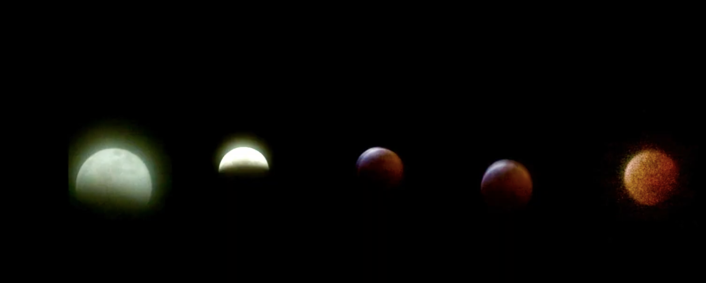
Kindergarten — Total lunar eclipse that sparked my curiosity
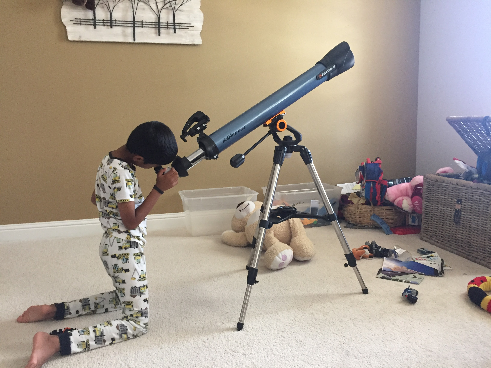
Age 6 — Backyard stargazing
Early space & astronaut fascination
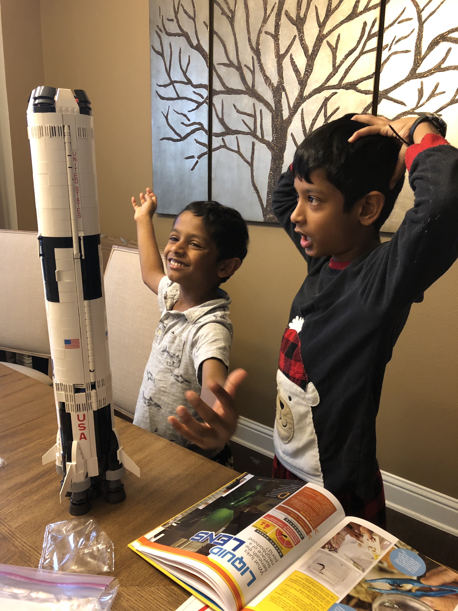
Age 6 — Lego rocket engineering
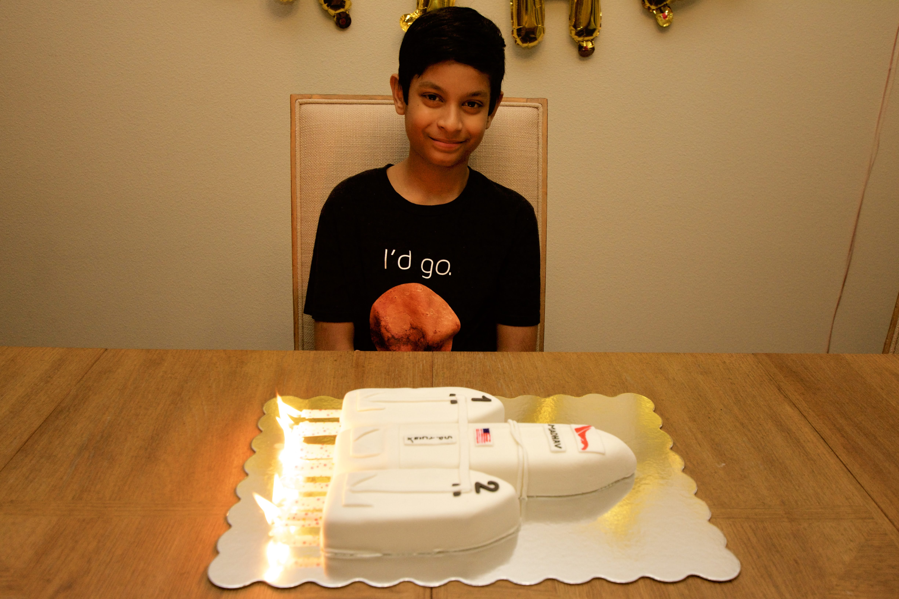
Mars-themed birthday celebration
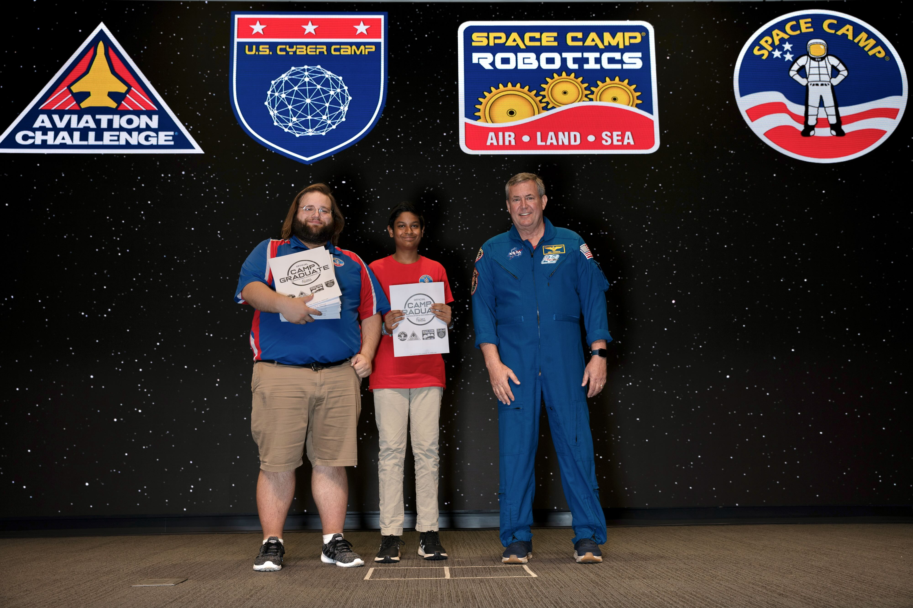
Age 15 — Advanced Space Academy, Huntsville, AL
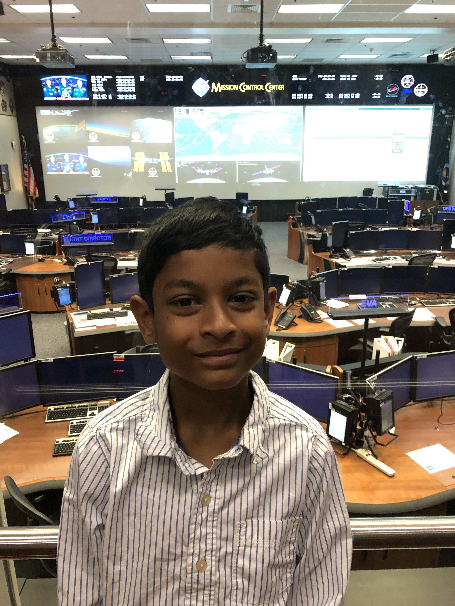
Mission Control Flight Director console
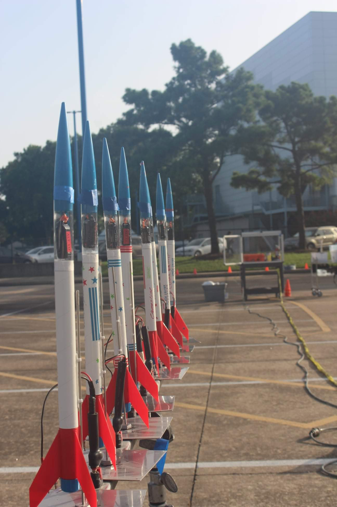
Age 10 — Rocket design at NASA camp
Problem Solving & Space Camps
As I grew older, that passive wonder evolved into a desire to actually solve problems. This shift started at a NASA summer camp where I found myself designing simulated lunar bases and programming rovers. I loved it so much that I later returned as an assistant counselor to help spark that same excitement in younger kids.
Years later, I found myself standing as the flight director in a Space Shuttle simulator at the U.S. Space & Rocket Center. Staring at my monitor during a high-stakes scenario, I blurted out, “Whoa! Why are the payload bay doors closed?” Ordering CAPCOM to open them was a split-second decision that averted a simulated collision. Guiding my ten-person mission control team through those frantic moments left me with a clear, concrete ambition: one day, I want to help guide humanity’s real steps onto Mars.
Engineering the Future
I’m drawn to aerospace engineering because it does two things at once: it pushes the limits of human capability and overcomes seemingly impossible challenges, and it creates a trickle-down effect of everyday innovations on Earth. But I also know that getting there requires solving massive hurdles first—like the immense weight and cost of fuel needed to break gravity compared to the relatively weak thrust of current chemical engines. Later, inspired by how effortlessly birds soar in the sky and marine life moves through water, I taught myself 3D modeling and Computational Fluid Dynamics (CFD) to explore biomimicry in flight. I designed aircraft wings modeled after the unique tubercles of a humpback whale and built a prototype remote-controlled plane to test the geometry in the real world. Seeing a 12% improvement in flight range was an incredible feeling — proof that looking to nature could dramatically cut drag and improve fuel efficiency.
Lately, I've been eager to push my boundaries even further. I currently assist a professor at the University of Texas at Austin's aerospace department on a project for the U.S. Department of the Navy, which has been an incredible opportunity to learn advanced aerodynamics directly from experts. Balancing my time in the lab with my high school aerospace coursework and NASA’s High School Aerospace Scholars program has been a whirlwind, but it’s continually grounding my technical foundation in real-world engineering.
Aerospace engineering has this amazing capacity to redefine what is humanly possible. I look forward to entering college to figure out my exact specialization, collaborate with peers who are just as obsessed with flight as I am, and dive into original research. Driven by the very same curiosity I felt as a kid looking up at a red moon, I'm ready to dedicate my college years to solving the complexities of spaceflight and helping make life beyond our planet a reality.
40.5″ whale-mimetic UAV flight test prototype
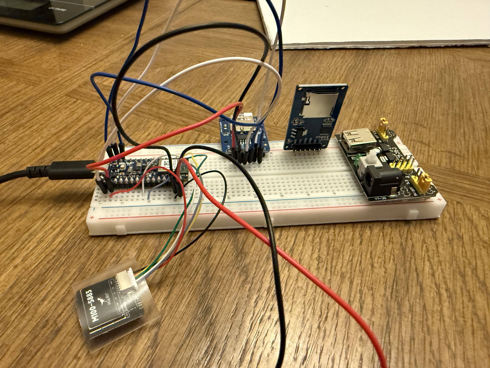
Onboard GPS & telemetry integration
Custom 280-pipe wind tunnel setup
High School Aerospace Scholars (NASA)
NASA Moonshot Team Lead
Overview
Selected for a highly competitive program and successfully completed a rigorous 5-month, 12-module NASA academic curriculum focused on Earth science, space exploration, and advanced aeronautics.
Recognition & Mission Execution
Qualified for the intensive, week-long Moonshot program by earning an A+ during the academic phase.
Led the Echo team as Systems Engineer to design and plan a comprehensive, Artemis-themed mission architecture to the Moon and Mars.
Presented our final mission design and technical blueprints directly to a panel of expert NASA engineers.
My Music Journey
Dedication
11+ Years
Classical piano study
Learning
ABRSM L7
Rigorous curriculum
Live Performances
35+ Recitals
Incl. Kennedy Center solo
Community Impact
$1,000+
Pediatric cancer research
People find all kinds of ways to express themselves—some paint, some write, but for me, it’s always been the piano. I’ve been taking lessons since first grade, and sitting down at the keys has become my favorite way to clear my head and just unwind.
Over the last four years, I’ve also found a way to use my music to help out others, sharing my practice videos to support fundraisers at my music school for the National Pediatric Cancer Foundation. I’ve performed at over thirty recitals, community events, and local retirement homes, trying to bring a little bit of comfort wherever I can.
Still, nothing really prepared me for the moment I walked onto the stage at the John F. Kennedy Center in Washington, D.C. Walking out completely solo in front of five hundred people was honestly terrifying, but looking out at the audience after the final chord faded was one of the most rewarding feelings I’ve ever had.
Featured Solo Performance — The John F. Kennedy CenterWashington, D.C. Solo Debut
Live solo classical piano performance center stage at the John F. Kennedy Center for the Performing Arts in Washington, D.C.
2015
Early Beginnings
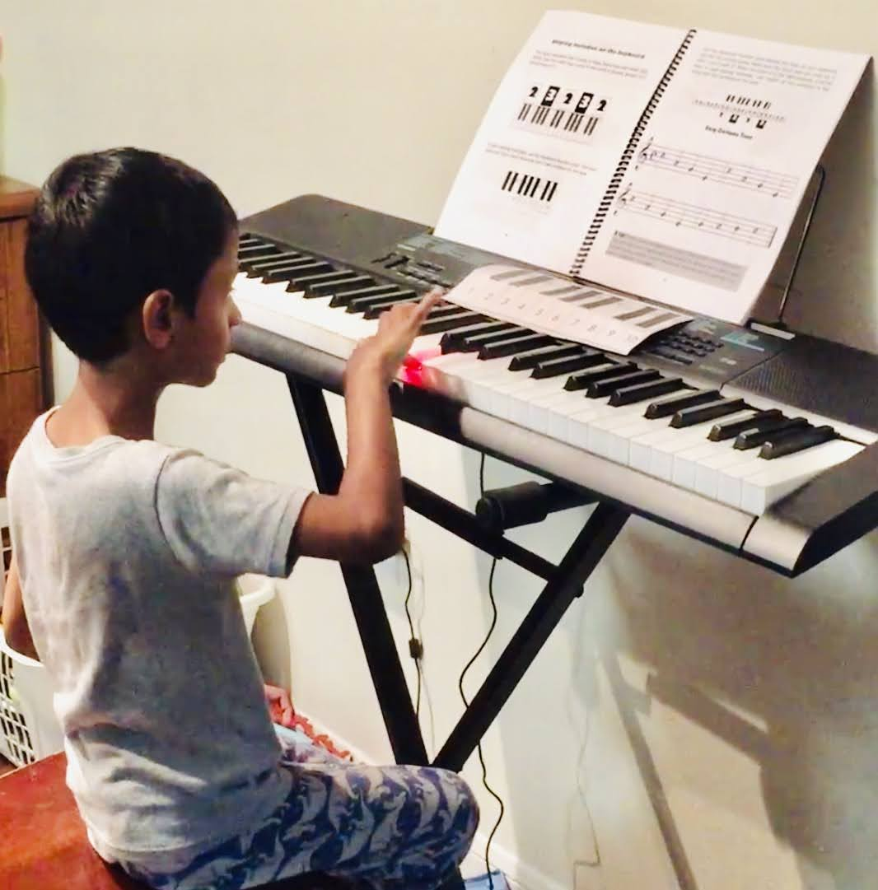
Where it all began: Discovering the keys and taking my first piano lessons at age 6.
2017
Developing Technique
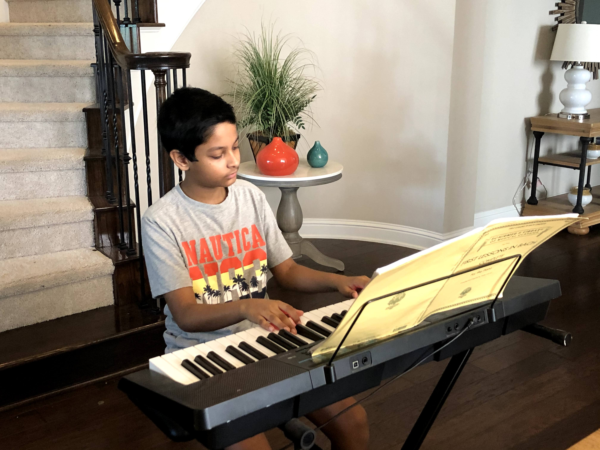
Building foundational technique, focus, and a growing passion for musical performance at age 8.
2021
Expanding Repertoire
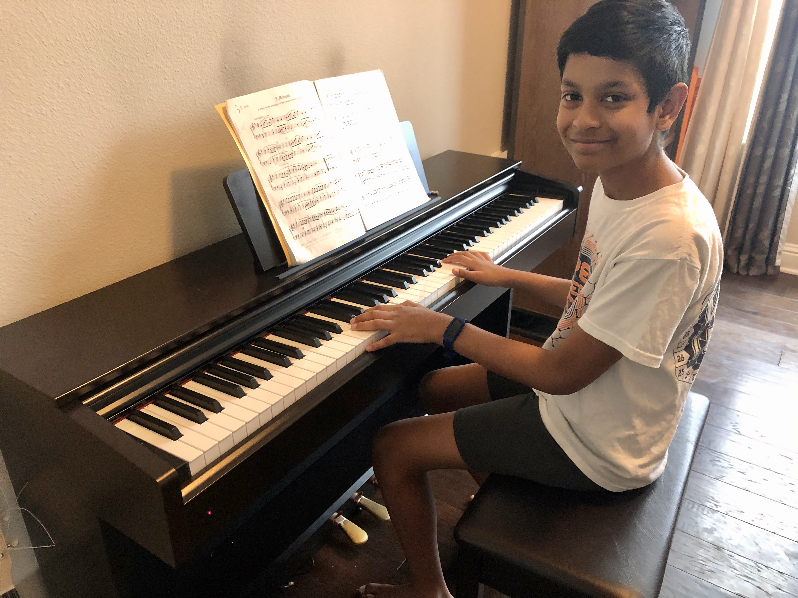
Advancing to complex repertoire and celebrating the journey with new milestones at age 12.
July 2023
Kennedy Center Debut
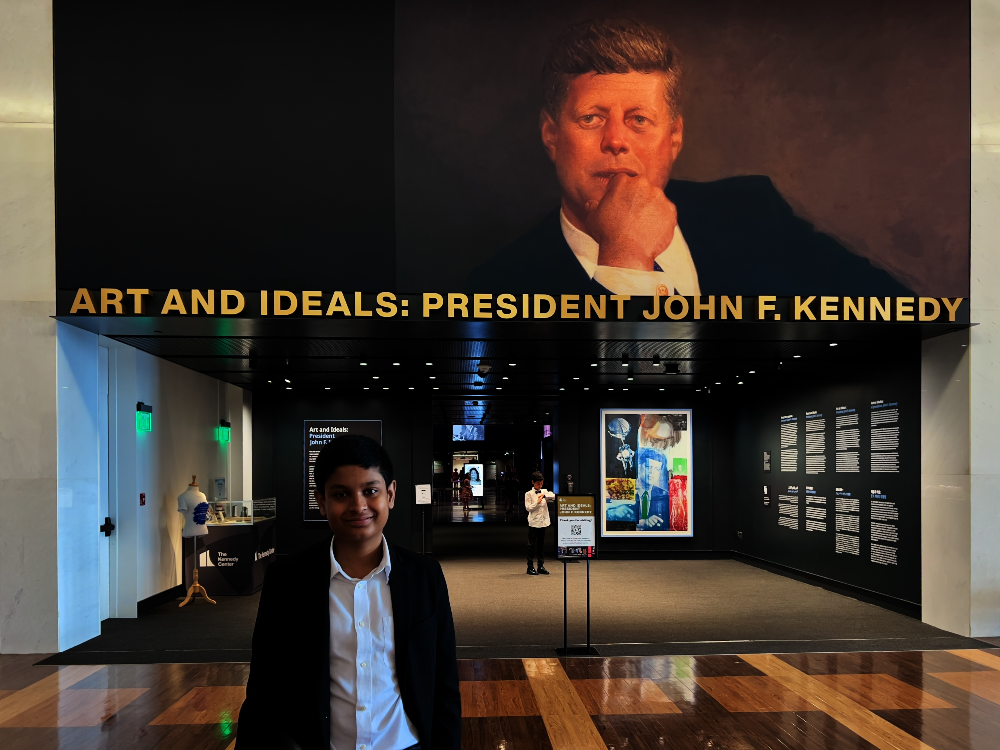
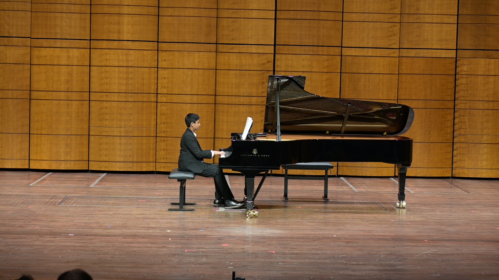
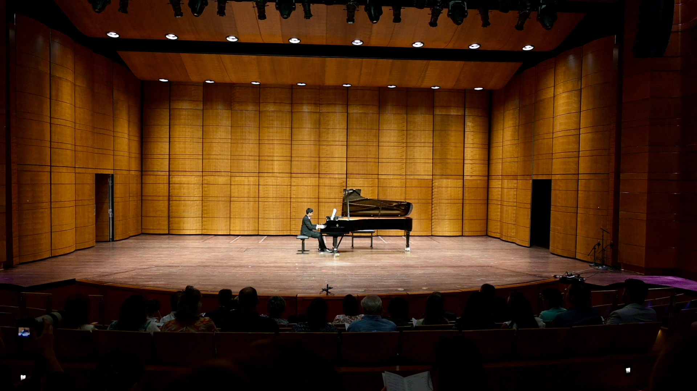
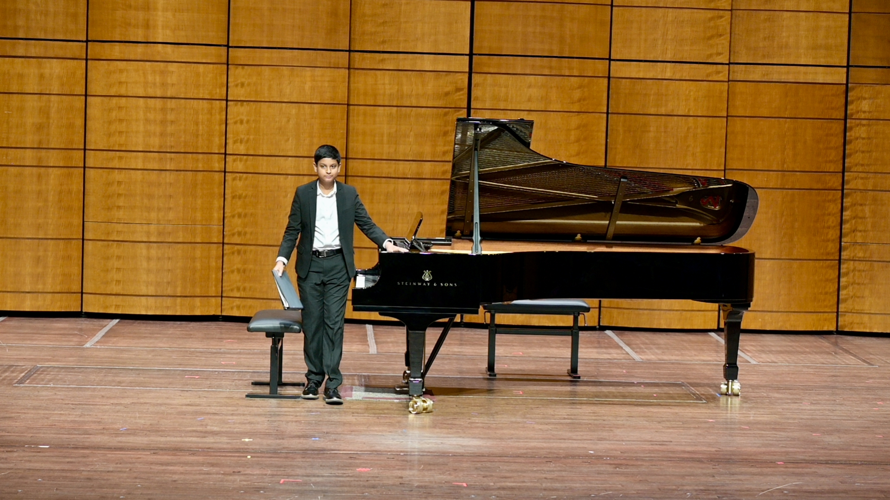
A major milestone: performing a solo piece center stage at the prestigious Kennedy Center in Washington D.C.
March 2024
Paramount Theatre
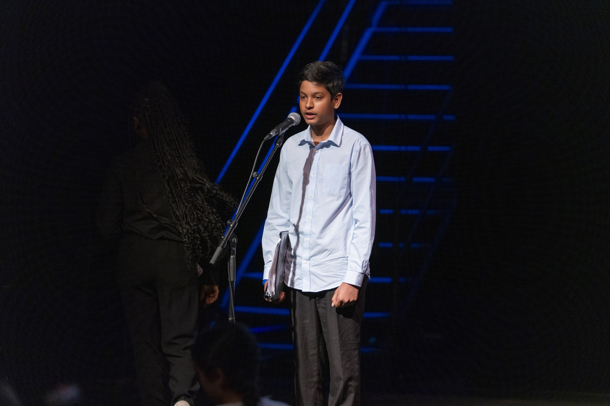
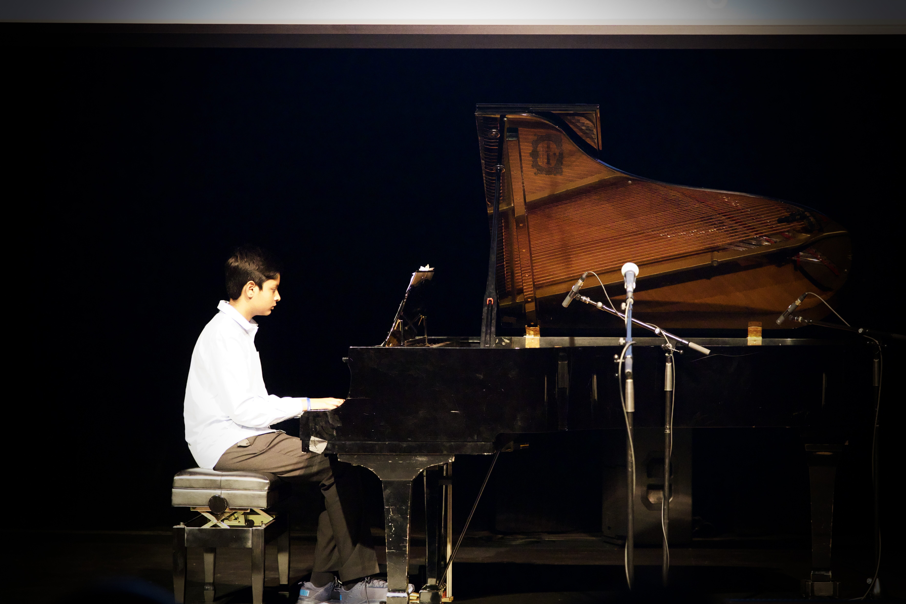
Live solo piano performance for the Austin community at the historic Paramount Theatre in Texas.
January 2025
ABRSM Level 7 Achievement
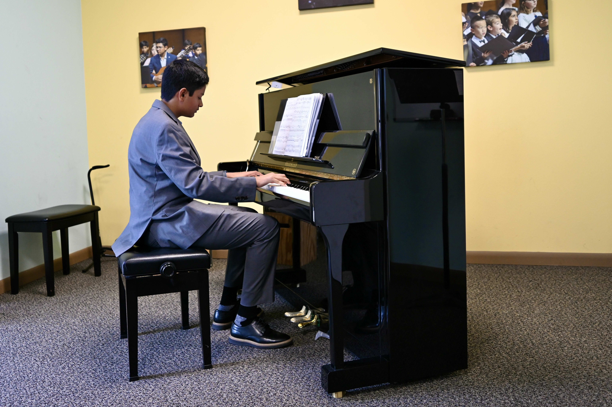
Progressing through the rigorous ABRSM curriculum to Level 7, and celebrating competitive milestones.
August 2025
Summer Concert Series
Taking the stage at renowned venues during the summer concert series, mastering advanced compositions.
Experience & Education
My academic foundation, university research collaborations, and community leadership.
Academic Foundation
Education & University-Level Coursework
Round Rock High School • Class of 2027
High School STEM Rigor
Round Rock High School (AP & Post-AP)
Completed advanced STEM coursework including Multivariable Calculus, AP Calculus BC, AP Physics C, AP Physics 1, and AP Chemistry.
University Mathematics (11th – 12th Grade)
Stanford University Pre-Collegiate Online Studies
Earned 3 university credits in advanced courses matching the official Stanford curriculum: Linear Algebra (A+; matrices, vector spaces) and Number Theory (proofs).
Engineered fuel-efficient biomimetic aircraft wings; 3D-designed 56 models, executed 250+ CFD runs, and validated lift in a custom-built wind tunnel.
Built and flight-tested a 40.5″ UAV prototype achieving 12% energy savings in real-world flight trials; posted first-author paper on JEI Pre-Print (under peer-review).
International Research Conference for Children (ircc.world ↗)
Presented two-phase biomimetic wing research to an international audience, sharing empirical data from 56 3D models, 250+ CFD runs, wind-tunnel testing, and 40.5″ UAV flight trials.
Awarded Best Research Presentation in the High School category.
Grades 11 – 12Research & Academics
Aerospace Lab Research Assistant
UT Austin Cockrell School of Engineering: Vertical Flight Lab
Assisted Prof. Dr. Jayant Sirohi and Ph.D. researchers on a U.S. Dept. of the Navy autonomous ship-inspection UAV project.
Conducted 670 tests evaluating UAV collision-avoidance sensors, 3D-designed custom sensor mounts, and integrated sensors onto the Navy drone platform.
$3,000 Smith & Dawson Excellence Award — Top 2 of 431 projects (GARSEF)
U.S. Air Force Research Laboratory Award — Aerospace engineering innovation
$6,000 Total Scholarships & Best Presentation at International Conference
View Biomimetic Research→
State & RegionalGrades 10 & 11
2x Science Fair Winner & Best-of-Fair Finalist
2x 1st Place Winner at the Greater Austin Regional Science & Engineering Fair (GARSEF), advancing as a Texas State (TXSEF) Finalist and ranked among the Top 12 of 330 Projects & Best-of-Fair Finalist.
1st Place at Global Finals (Top 1 / 600 teams) across 13 countries, earning both the DaVinci Award and Renaissance Award for extraordinary engineering and creativity.
View Mechatronics Builds→
International ConferenceJune 2026
Best Research Presentation (IRCC)
Awarded Best Presentation in the High School category at the International Research Conference for Children (IRCC) for scientific rigor, empirical clarity, and live defense of biomimetic CFD and UAV flight data.
Earned the United States Congress’s highest youth honor program medal by completing 400+ hours of self-leadership, voluntary public service, personal development, and physical fitness.
National AcademicFall 2026
National Merit Scholarship Semifinalist
Recognized among the top 1% of U.S. high school seniors based on a qualifying PSAT/NMSQT Selection Index score of 226 (1510 / 1520 total score).
National ServiceGrade 10
President’s Volunteer Service Award (PVSA) — Gold
Awarded Gold-level national recognition for dedicating 120+ volunteer hours as an Assistant Camp Counselor & STEM Mentor at Space Center Houston: NASA Explorer Camps, mentoring 75 students.